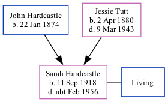

Sarah E Scholefield (née Hardcastle) 1918 - c1956
[ Home ] | [ Calendar ] | [ Surnames Index ] | [ Family History ]A weaver woolen and the daughter of John Hardcastle (a coal miner hewer) and Jessie Tutt (a general servant), Sarah Hardcastle, the second cousin once-removed on the father's side of Nigel Horne, was born in Pontefract, Yorkshire, England on Sep 11, 19181,2. She married Sidney Scholefield in Spen Valley, West Yorkshire, England around Nov 19394. On Sep 29, 1939, she lived at 7 Ilford Place, Morley, West Yorkshire1.
She died c. Feb 1956 in Spen Valley3.
Parents
- John William was born on Jan 22, 1874
- Jessie Maria was born on Apr 2, 1880
Citations
- 1939 Register - Findmypast (was recorded at this address)
- England & Wales births 1837-2006 - Findmypast
- England & Wales deaths 1837-2007 - Findmypast
- England & Wales Marriages 1837-2005 - Findmypast
Media
England & Wales marriages 1837-2005 - BMD/M/1939/4/AO/000789/017
England & Wales births 1837-2006 - BMD/B/1918/4/AZ/000506/057
England & Wales deaths 1837-2007 - BMD/D/1956/1/AZ/001174/111
1939 Register - TNA-R39-3688-3688I-018-13
Family Tree
Generated by Ged2Site. Last updated on Jul 20, 2025